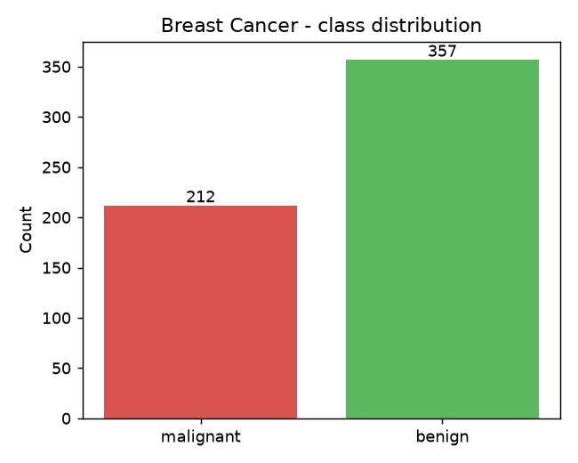
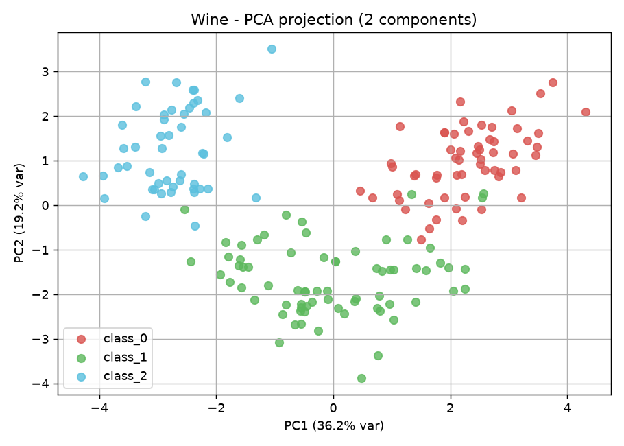
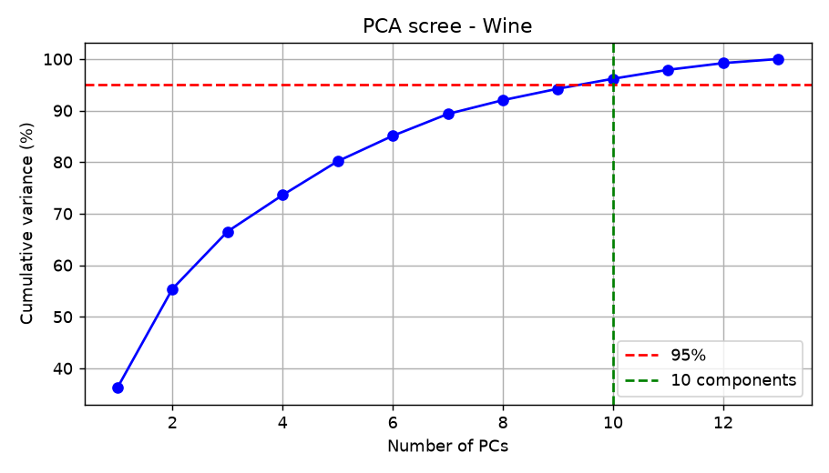
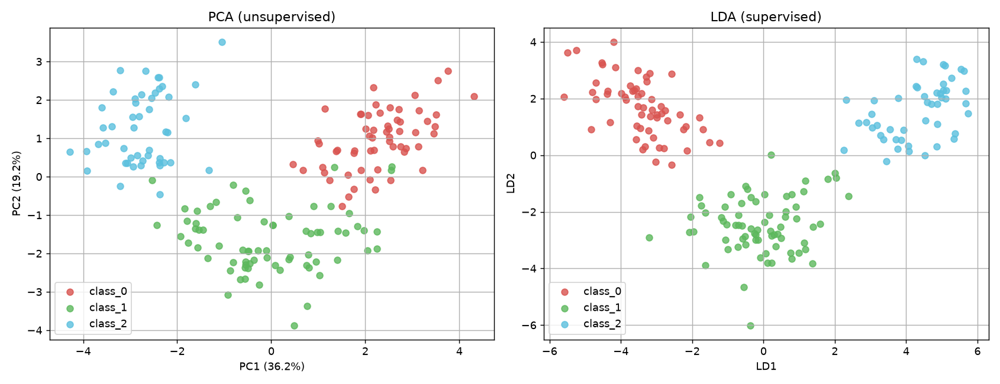

Aim: Implement SVM for classification and PCA for dimensionality reduction, and analyse their effectiveness on real-world datasets. Supervised (SVM) vs unsupervised (PCA) learning are contrasted; class balancing and stratified k-fold cross-validation are applied throughout.
Dataset: UCI Breast Cancer Wisconsin (Diagnostic) — 569 samples, 30 features. Features standardized (SVM is distance-based).

Mild imbalance: malignant 212 vs benign 357.
stratify=y (preserves class ratio).class_weight='balanced' to stop the minority
(malignant) class being ignored.| Metric | Balanced (C=1) |
|---|---|
| Accuracy | 0.9561 |
| Precision | 0.9855 |
| Recall | 0.9444 |
| F1 Score | 0.9645 |
Confusion matrix (rows=true, cols=pred): [[41, 1], [4, 68]]
| Metric | Test value | |
|---|---|---|
| Accuracy | 0.9737 | 0.9737 |
| Precision | 0.9859 | 0.9859 |
| Recall | 0.9722 | 0.9722 |
| F1 Score | 0.9790 | 0.9790 |
Confusion matrix: [[41, 1], [2, 70]]
| Score | Mean ± Std |
|---|---|
| Accuracy | 0.9772 ± 0.0089 |
| F1 | 0.9820 ± 0.0069 |
| Precision | 0.9757 ± 0.0195 |
| Recall | 0.9888 ± 0.0162 |
| Kernel | CV F1 | Test Accuracy | Test F1 |
|---|---|---|---|
| linear | 0.9755 | 0.9561 | 0.9645 |
| rbf | 0.9807 | 0.9649 | 0.9718 |
| poly | 0.9409 | 0.9561 | 0.9664 |
Winner (CV F1): rbf.
Dataset: UCI Wine — 178 samples, 13 features (3 cultivars). Features standardized so no single variable dominates the variance.

2-D PCA projection of Wine; PC1 = 36.2% variance, PC2 = 19.2% (total 55.4% retained in 2 PCs).

The cumulative curve crosses 95% variance at 10 of 13 components — a strong compression: from 13 dimensions down to 10 keeps essentially all information.
| Component | Top contributing features (weight) |
|---|---|
| PC1 | flavanoids (+0.42), total_phenols (+0.39), od280/od315_of_diluted_wines (+0.38), proanthocyanins (+0.31), nonflavanoid_phenols (-0.30) |
| PC2 | color_intensity (+0.53), alcohol (+0.48), proline (+0.36), ash (+0.32), magnesium (+0.30) |
| Aspect | Original (13-D) | PCA (2-D) |
|---|---|---|
| # features | 13 | 2 |
| Information | 100% | 55.4% retained |
| Efficiency | slower | faster |
| Separability | full | mostly kept |
| Interpretability | per-feature | mixed combos |

LDA explained-variance ratio: [0.6875, 0.3125]
(total 100.00%). LDA is supervised — it uses class
labels to maximize separation, so the three cultivars form tighter clusters than in
PCA. Trade-off: LDA needs labels and is limited to C-1 = 2 components for 3 classes.
class_weight='balanced'
handled the mild imbalance; stratified k-fold CV confirmed stable generalization;
kernel chosen by CV F1 (winner: rbf).All results use
random_state=42, class_weight='balanced', and stratified
5-fold CV for reproducibility.